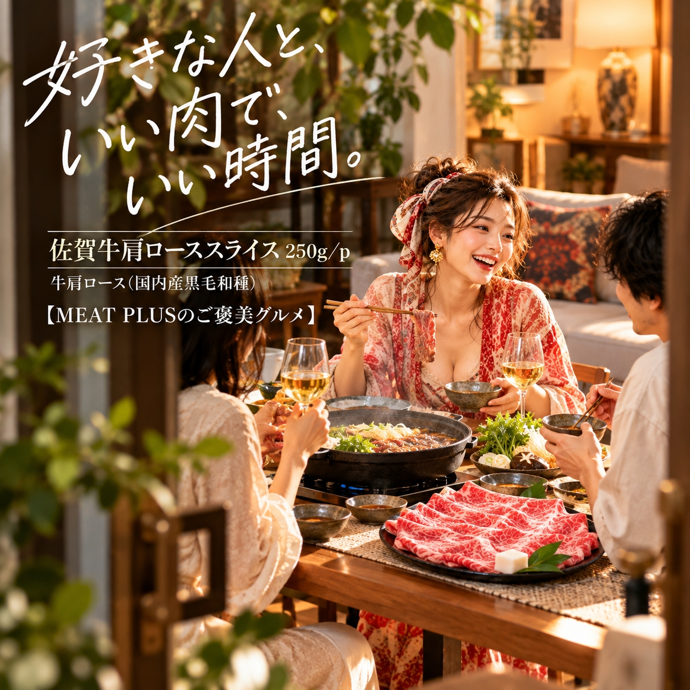

SCENE 01
M008
m 贈り物
佐賀牛肩ローススライス 250ｇ/ｐ
【とろける霜降り、食卓が贅沢になる佐賀牛の旨み。】
- 内容量250ｇ/ｐ
- 保存冷凍
- 産地日本
商品の特徴を読む
今夜はちょっと特別な食卓を囲みませんか？きめ細やかな霜降りが美しい、艶やかな佐賀牛がテーブルに並ぶだけで、家族の笑顔がこぼれます。日本屈指のブランド牛「佐賀牛」の中から、A4〜A5等級に格付けされた最高品質の肩ロースを厳選しました。赤身と脂身のバランスが絶妙な肩ロースは、肉本来の濃厚な旨みと、とろけるような脂の甘みが口いっぱいに広がります。薄切りスライスなので、定番のすき焼きやしゃぶしゃぶに最適です。さっと火を通せば、驚くほど柔らかい食感をお楽しみいただけます。割り下やポン酢と絡まることで、佐賀牛の持つ豊かな風味がより一層引き立ちます。250gの使いやすいパックでお届けしますので、ご夫婦やカップルでのお食事や、もう一品加えたい時にもぴったり。冷凍でのお届けなので、急な来客や特別な日のお祝いにも、冷凍庫にストックしておくと安心です。大切な方への贈り物としても喜ばれる逸品です。ご家庭で本格的な味わいを、ぜひご堪能ください。
公式サイトへ移動します。価格・在庫・配送条件は移動先で最終確認してください。
SCENE 02
赤身と脂身のバランスが絶妙な肩ロースは、肉本来の濃厚な旨みと、とろけるような脂の甘みが口いっぱいに広がります。

SCENE 03
冷凍でのお届けなので、急な来客や特別な日のお祝いにも、冷凍庫にストックしておくと安心です。
PRODUCT INFORMATION
購入前に確認したい商品情報
- 商品名
- 佐賀牛肩ローススライス 250ｇ/ｐ
- 商品規格
- 250ｇ/ｐ
- 保存方法
- 冷凍
- 原産国
- 日本
- 製造地
- 日本
- 賞味期限
- 発送日より3ヶ月
原材料
牛肩ロース（国内産黒毛和種）
FAQ
購入前のよくあるご質問
美味しい解凍方法を教えてください。
お召し上がりになる前日に冷蔵庫に移し、ゆっくりと時間をかけて解凍するのがおすすめです。ドリップ（肉汁）の流出を最小限に抑え、お肉の旨みを損なわずに美味しくいただけます。お急ぎの場合は、パックのまま氷水に浸けて解凍する方法もございます。
贈り物として利用できますか？
はい、ご利用いただけます。上質な佐賀牛は、お中元やお歳暮、お誕生日や内祝いなど、大切な方への贈り物として大変喜ばれております。ギフト用の包装や熨斗（のし）にも対応可能ですので、ご注文時にお申し付けください。
MEAT PLUS OFFICIAL SHOP
【とろける霜降り、食卓が贅沢になる佐賀牛の旨み。】
仕入れ・加工・梱包・発送まで自社で行うMEAT PLUSの公式オンラインショップでご注文いただけます。
公式オンラインショップで購入する商品選びの要点
佐賀牛肩ローススライス 250ｇ/ｐ。商品規格：250ｇ/ｐ。保存方法：冷凍。原産国：日本。製造地：日本。賞味期限：発送日より3ヶ月。
価格・在庫・配送日・送料・ギフト対応は、公式通販の商品ページで最新情報をご確認ください。
もう少し、見てみる？
こちらの商品もチェック